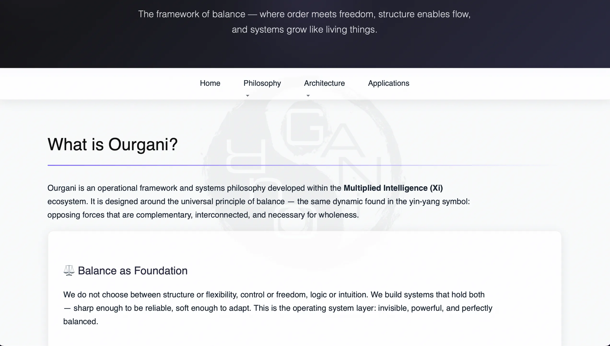
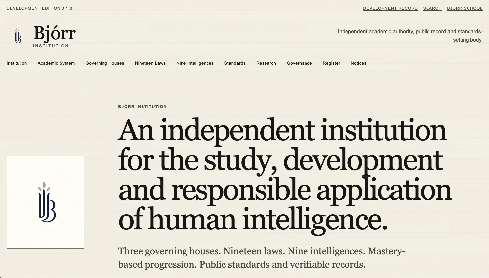

Server Architecture & Digital Infrastructure
Enterprise systems, hosting & development
About This Work
Oversee an enterprise-level private server infrastructure supporting 40+ websites and services. Design, build and maintain secure, scalable and compliant environments.
Also develop web and mobile applications — including population data tools and algorithm-driven platforms — bringing engineering logic to software and user experience.
Systems & Projects
- Private server cluster management & security
- Domain & hosting infrastructure
- Web app development & database design
- UI/UX implementation aligned with cognitive principles

Ourgani
Private digital infrastructure and service architecture supporting a wider ecosystem of sites, tools and internal systems.

Bjórr Institution
Institutional systems thinking, structured digital services and the operational framework behind a multi-part learning environment.
Related notes: